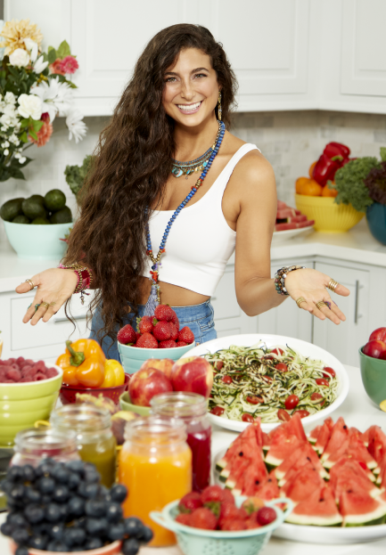

My name is Kristina Carrillo-Bucaram, and many know me as "FullyRaw Kristina."
I'm a writer, speaker and raw vegan activist who educates and guides people who are sick and tired of feeling "sick and tired" and are ready to take more control over their health and experience the compassionate lifestyle one can achieve by living FullyRaw.
FullyRaw is not just a diet. Its a lifestyle. I like to think of this way of eating as an awakening and way of rediscovering connection with ourselves, with others, and with our earth. I really believe it begins with food, and then it becomes a mind, body, and spirit transformation. It's a way for you to build the foundation that will lead you to a healthier, happier, and more abundant life. I'm here to help guide you through the journey of returning to yourself. As you dive into these programs, the recipes, the videos, the workshops and more, you're going to discover just how powerful fruits and vegetables really are for our bodies. I truly believe that food is medicine because I have seen its substantial transformational abilities myself. It's a mind, body, spirit journey.
At the age of 16, I was diagnosed with Type 2 diabetes, more specifically, hyperglycemia. It was devastating to think this would be something I would suffer from for the rest of my life. That wasn't good enough for me. I was determined to find a way to take control of how I was feeling and live a fuller life where I wasn't bogged down with the symptoms of hyperglycemia.
I began to examine my lifestyle to determine what I could do to take back control over how I was feeling. Since I was raised in a multicultural household with a Lebanese mother and an Ecuadorian father, our diet often consisted of rather traditional foods, including heavy Middle Eastern dishes, grape leaves, kibbe (raw meat), baklava, chorizo, garlic-butter sauces, chicken, rice, beans, and fried eggs. In looking back, I am confident that our diet was a leading contributor to my diagnoses and overall feelings of unwell. I did not grow up eating many fruits and vegetables...at all.
It was by chance that a stranger approached me in a grocery store the same afternoon that I'd been released from the hospital one day, and he started talking to me about raw foods, juicing, and living vibrantly eating fruits and vegetables. The night after meeting him, I was rehospitalized, and as soon as I got out again, he was the first person I called. At my lowest point, I was 87 pounds and could Roboto barely walk. I was only 18 at the time, and I couldn't imagine living the rest of my life this way. I de- cided to make drastic lifestyle changes and change what I was consuming in hopes it would heal me. With the coaching and mentoring of prominent raw food experts, I started following a "raw food diet." I literally went FullyRaw vegan in one day and never looked back.
What does it mean to be a raw vegan? A fully raw vegan diet is widely recognized as a lifestyle that only consumes fruits, vegetables, nuts, and seeds, in their natural state, fresh, ripe, and organic when possible.
I ate simply for my first few years of going raw vegan, and this included mono-mealing on fruits, smoothies, salads, some juices, eating various fruits, with few nuts and seeds. (Mono-mealing is eating only one food type in abundance.) In fact, I ate peaches for two weeks straight when I began. I saw drastic changes in my body's chemistry. I stopped having blackout migraines, fainting spells, chronic fatigue, chronic constipation, depression, and much more. My overall skin and complexion improved, and most importantly, my symptoms of diabetes began to disappear.
By 2005, when I was nearly 20 years old, I officially won my battle against Type-2 diabetes and hy- perglycemia. It was so empowering and freeing to know that I was able to reverse the effects of my diagnosis by eating a fully raw vegan diet--and in just under TWO years.
In addition to discovering that this lifestyle is defined by what I ate, I quickly discovered that it was about so much more than just food. I learned that it's actually a compassionate lifestyle. I found compassion for myself and for others, as well as ethical benefits such as saving animals' lives and numerous environmental benefits. A vegan lifestyle lends itself to be a very sustainable lifestyle. Changing what I ate changed my life. It led me on a mind, body, and spirit healing journey and provided me with deep emotional trauma healing I needed in order to live a fuller life.
While giving me a fuller life, it also gave me a purpose. At that time, I decided to dedicate my life to sharing a message of health and wellness that could also help many others.
While I was attending Rice University, I started the Rawfully Organic Co-op in my garage in Houston. Every Tuesday, Thursday, and Saturday, my family, friends, and I dispensed fresh fruits and vegetables to our community and neighbors until the co-op had so many supporters that it grew into three separate locations around Houston. Between those three locations, the co-op was feeding more than 50,000 people and more than 300-1000 families per week.
It was incredibly rewarding to know how many families now had access to fresh fruits and vegetables. However, I quickly discovered that just providing families with the healthful vegan foods their bodies needed wasn't enough. Yes, people were excited to receive their fruits and vegetables, but they found themselves getting stuck with what to do next.
After many families would take their produce home, they would return with questions like:
"What exactly is this fruit?!"
"What do I do with this kale?"
"What recipes can I make with these vegetables and fruits?"
To answer their questions, I began my "FullyRaw Kristina" YouTube channel, where I posted videos to share with my Texas co-op members and anyone else who wanted to know how to eat fully raw. I quickly learned that it wasn't just my Texas community who needed this health information. The channel began to grow quickly, and hundreds of people grew into thousands of hungry individuals who wanted to learn about how to treat illnesses, eat more fruits and vegetables, and live a raw vegan lifestyle like me.
I am grateful to share this gift of being able to harness food's healing potential and guide you to the more healthful and abundant life you want. There are so many ways you can be involved and can take control of your own health. FullyRaw by Kristina offers education and solutions for people in all walks of life and for all budgets.

WHAT YOU'LL FIND ON MY WEBSITE
Free recipes an videos online and on social media
Subscriptions to a range of thoughtfully priced programs
Various challenges
FullyRaw Juices
The best-selling book The FullyRaw Diet: 21 Days to Better Health
I deeply believe that helping others to live a healthier life is my purpose. It's a mind, body, and spirit journey. My journey may have started with food, but it has grown into so much more than that. Today, it is my life's work to share my knowledge and experiences of health and wellness through YouTube, social media, my app and book, live events, and guided retreats—anyway I can.
I am happy to show you the way to good health, boundless energy, and transformation! Much love to you and many blessings.
A BIT MORE ABOUT FULLYRAW KRISTINA
My YouTube channel has more than 100 million views. My social media platforms (YouTube, Instagram, Facebook, Twitter, and Snapchat) have 3 million viewers. I have been on the Greatist.com list of "100 Most Influential People in Health and Fitness" every year since 2015. I am based in Houston, Texas.
I did my undergraduate studies at Vanderbilt University and later graduated from Rice University in 2009. I graduated Summa Cum Laude and was elected to Phi Beta Kappa for graduating at the top 5% of my class and also completing at least 90 semester hours in courses that reflect "learning for its own sake." I graduated with majors in Kinesiology, specializing in Health Sciences, and also received my Bachelor of Arts Degree. I specialized in ceramics, and I was honored to receive multiple grants at the time and displayed my own exhibits on both Vanderbilt and Rice University campuses. I also studied vocal performance and music theory, and I briefly studied abroad in Costa Rica, focusing on organic agriculture, permaculture, and sustainable living. Additionally, during my college and early coop years, I tutored others in Calculus, Physics, Algebra, Spanish, and SAT prep.
Download Your FREE e-Book Today! "5 Easy Ways To Go FullyRaw"